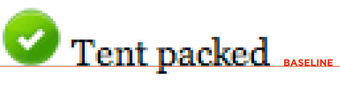
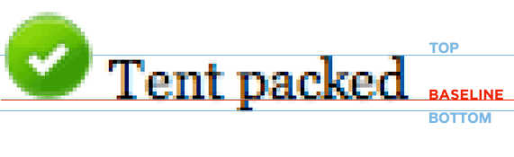
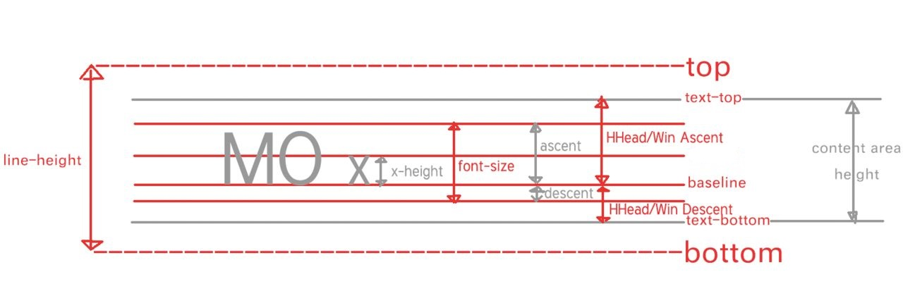
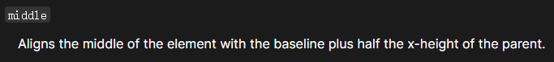

关于幽灵节点的另一个例子 Demo-1

ex 是CSS中的一个长度单位：x-height，小写字母x的高度。https://developer.mozilla.org/en-US/docs/Web/CSS/length
vertical-align 可选值

https://developer.mozilla.org/en-US/docs/Web/CSS/vertical-align
中线：横过小写英文字母x的中间的线
 x 中间
x 中间